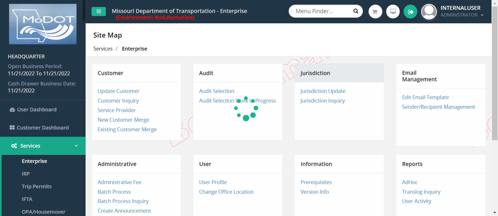
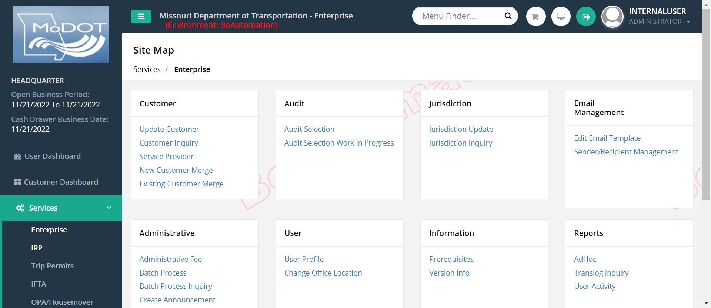

Started
Nov 22, 2022 10:53:33 am
Ended
Nov 22, 2022 10:54:14 am
Features Passed
0
Features Failed
1
Features
Scenarios
Steps
Timeline
System/Environment
| Name | Value |
|---|---|
| AppName | Celtic Project |
| user | Upstream GS |
| build | 1.1 |
| os | Microsoft Windows 11 |
-
Renewal after Reinstatement
10:53:34 am / 00:00:39:913 Fail
Renewal after Reinstatement
11.22.2022 10:53:34 am 11.22.2022 10:54:14 am 00:00:39:913 · #test-id=1FailRenew with ReinstateGiven User login as Internal userapphooks.Application_Hooks.as(io.cucumber.java.Scenario)anynameWhen User will navigate to IRPapphooks.Application_Hooks.as(io.cucumber.java.Scenario)anynameThen User will navigate to renew fleet and search for Reinstated Account NumberStep skippedThen User should navigate to Account screen and provides all the required input to proceedStep skippedThen user should navigate to Account verification screen and proceed furtherStep skippedThen user should navigate to Fleet screen and update Fleet Expiration Date & Fleet Type & Commodity Class and proceed furtherStep skippedThen user should navigate to Fleet verification screen and proceed furtherStep skippedThen user should land on Distance screen and select Estimated Distance and proceed furtherStep skippedThen user should navigate to Distance verification screen and proceed furtherStep skippedThen user should land on the Weight Group screen and go for Add Weight groupStep skippedThen user should land on the Add Weight Group screen and provide all the required input to proceedStep skippedThen user should land on the Add Weight Group Verification screen and go for Weight groupStep skippedThen user should land on the Weight Group and edit the existing weight group to proceed to Vehicle screenStep skippedThen user should land on the Vehicle Screen andStep skippedThen user should land on the Billing screen with open status and Request for TVR & set Delivery Type as PDF with CommentsStep skippedThen user should land on the Payment Init Verification screen & click on Pay NowStep skippedThen user should land on the Payment Collection pageStep skippedThen user verifies details in Fleet EnquiryStep skippedAnd user verifies details in Supplement EnquiryStep skippedAnd user verifies details in Vehicle EnquiryStep skippedAnd user verifies details in Vehicle Supplement EnquiryStep skippedapphooks.Application_Hooks.tearDown(io.cucumber.java.Scenario)Renew_with_Reinstate
-
org.openqa.selenium.json.JsonException
1 tests
org.openqa.selenium.json.JsonException
1 failedStatus Timestamp TestName Fail 10:54:10 am When User will navigate to IRP Renewal after Reinstatement.Renew with Reinstate.When User will navigate to IRP